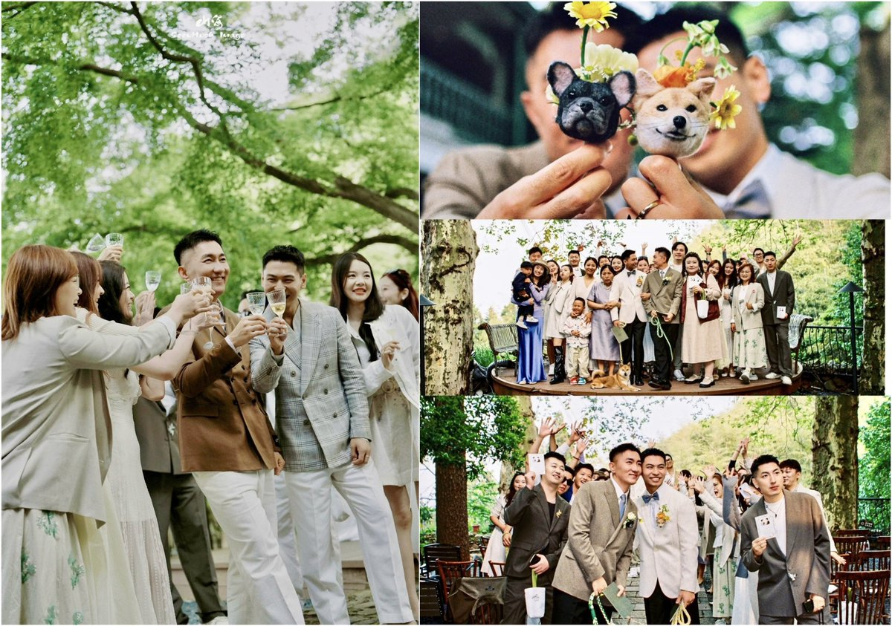
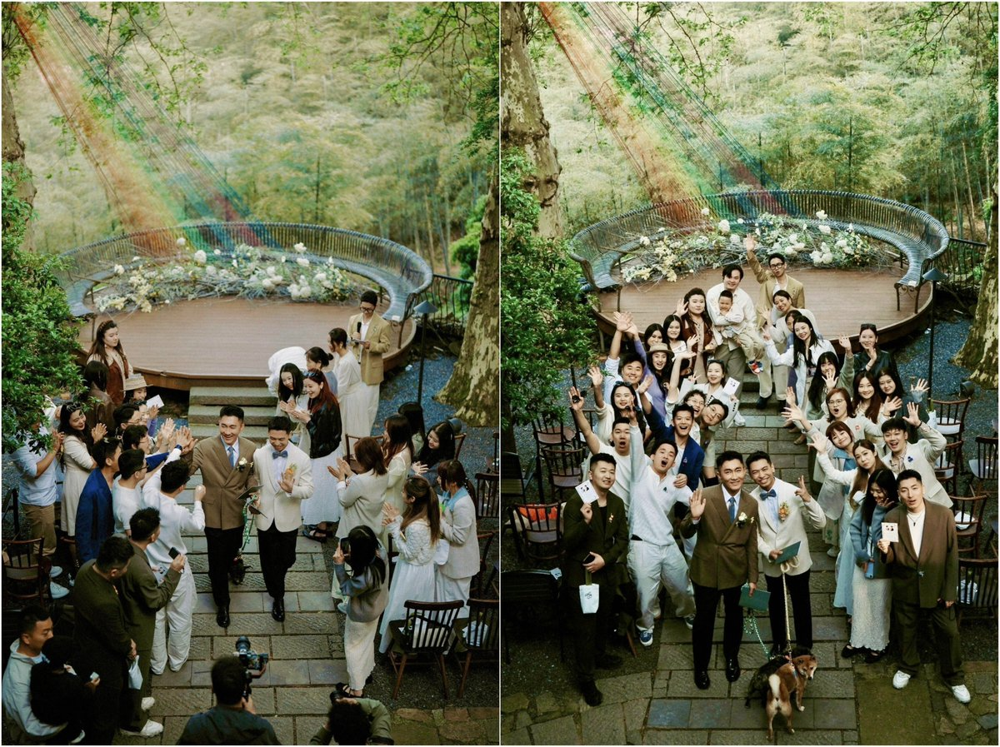
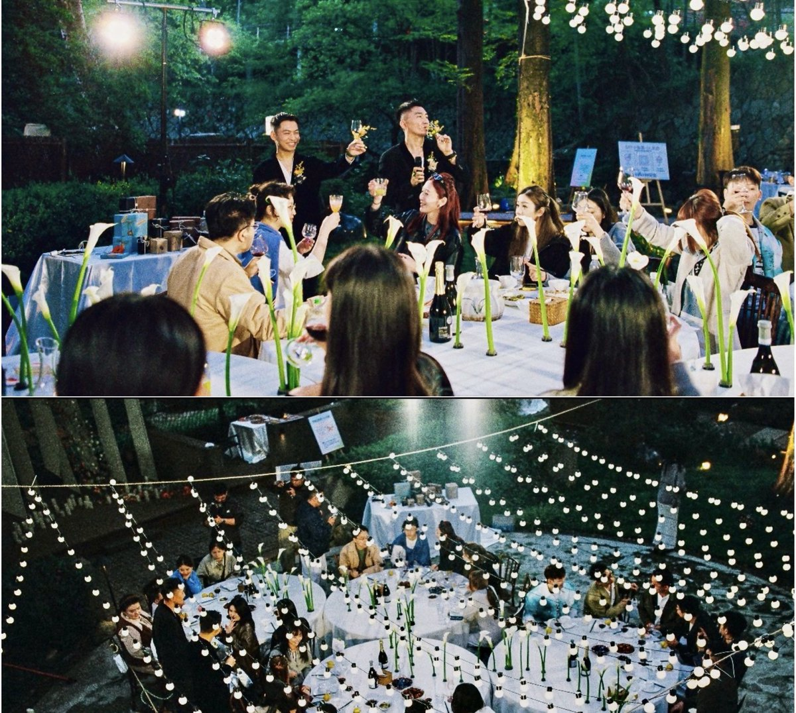
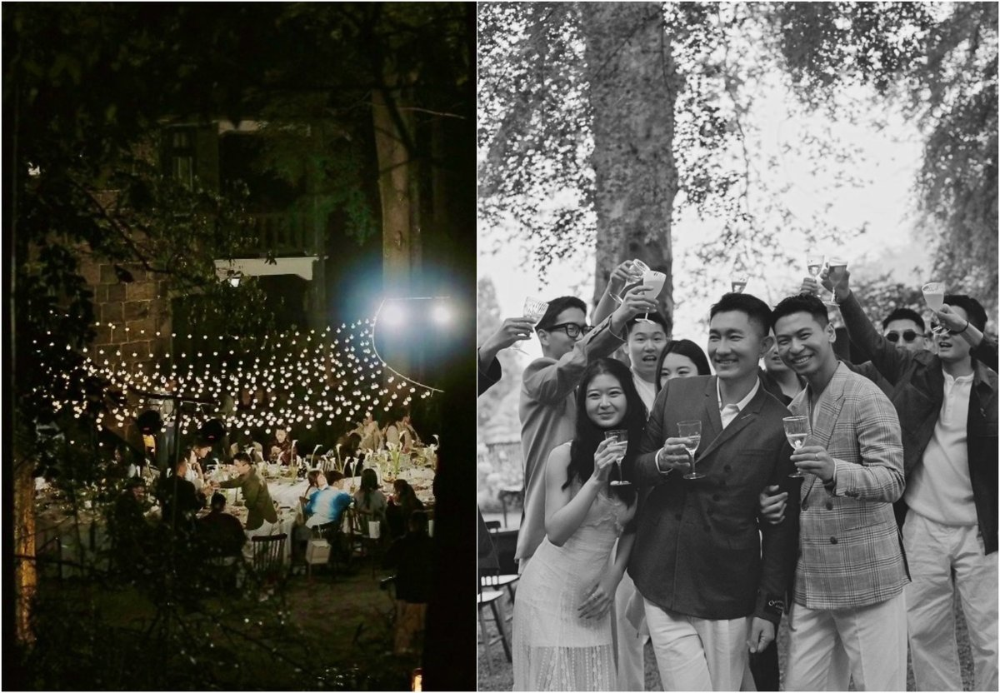

果酱离歌🏳️⚧️
@JamFarewellSong
RT @Forest08199718: 我们结婚啦！INTJ♌ & ENFP♉
两个毛孩子28岁· 第九年👨❤️👨 热爱生活🌅尽管在中国没有同性婚姻，而且官方意思是不要过份宣传，尽管他们去了美国注册婚姻证不会被本国承认，但是这是他们爱的海誓山盟和一纸证据。高兴的是有这么多…




Forest 🕊️👨🏼🤝👨🏻🏳️🌈🇺🇦
@Forest08199718
我们结婚啦！INTJ♌ & ENFP♉
两个毛孩子28岁· 第九年👨❤️👨 热爱生活🌅尽管在中国没有同性婚姻，而且官方意思是不要过份宣传，尽管他们去了美国注册婚姻证不会被本国承认，但是这是他们爱的海誓山盟和一纸证据。高兴的是有这么多亲人朋友的支持和参加了这个绝美爱情的婚礼。
📍河南 👉rednote : Mkai_97 https://t.co/uB2t7G58o2